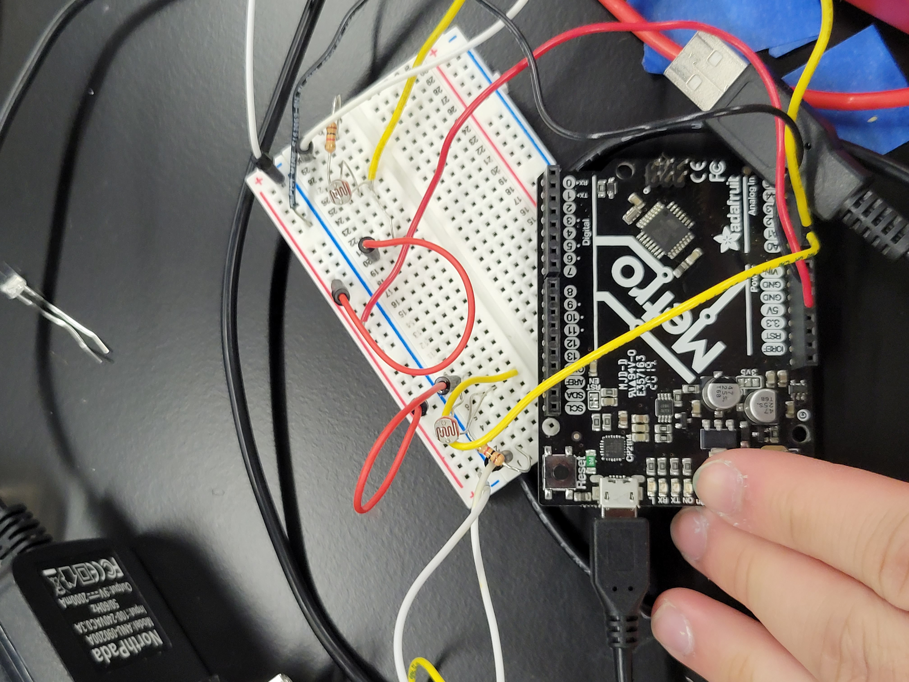
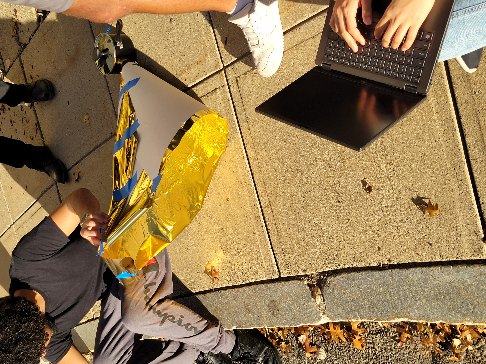

## Week 8
### Monday-Oct 31
On this Halloween, Catherine and I finally wrapped up the solar tracking project. While the others went outside to test out what they needed to test, we stayed inside with Nathan and used the indoor light source to test out the logic of our tracking device. After a bit of testing and messing around with the threshold values needed to have small movements, we made a workable solar tracking device! There should be a video below showing our progress.
Next, we tested it outside and used many extension cables and surge protectors to try to put our device in front of the sunlight. Our device ended up working quite well, and we also discussed some potential modifications to be made. Overall, it was a success.
At the end of class, we began to work on assemblying another simple circuit meant to detect photoresistor values to accompany the concentrator that the rest of the class was working on.
<video width="500px" height="500px"
controls="controls"/>
<source src="20221031_153300.mp4"
type="video/mp4">
</video>
<video width="500px" height="500px"
controls="controls"/>
<source src="IMG_5440.mp4"
type="video/mp4">
</video>
### Wednesday-Nov 2
On this Wednesday, Catherine and I worked on assemblying our simple light intensity detecting circuit. It is pictured below, and we tested this out alongside the cone that was constructed quickly. We found that the concentrator did cause a noticeable increase in the values detected (500 -700 or so), and thus, it was a success. We spent the rest of class talking about future plans for the rest of the semester and went into the weekend thinking about what else needs to be done for our final prototype.

